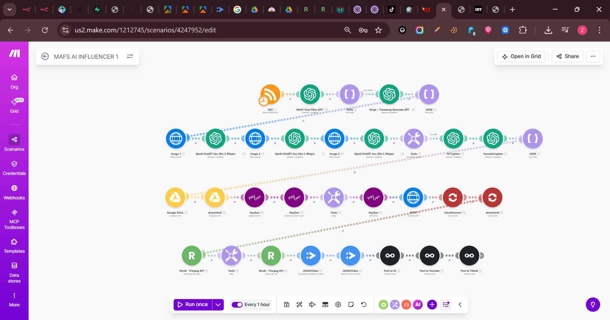
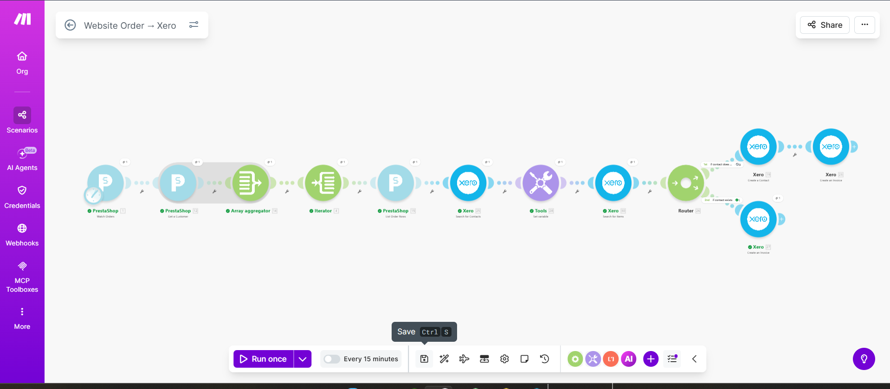
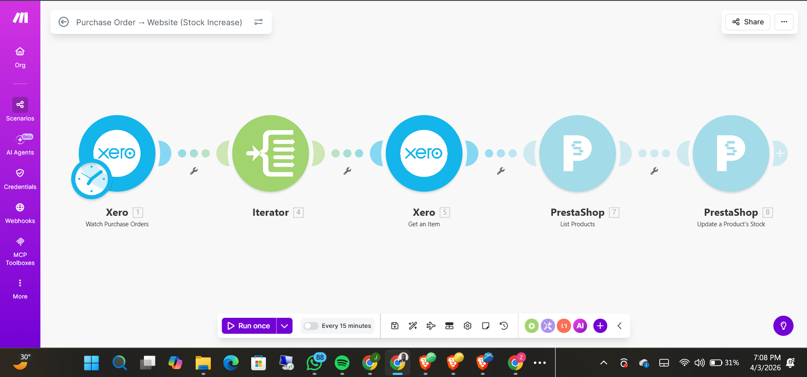
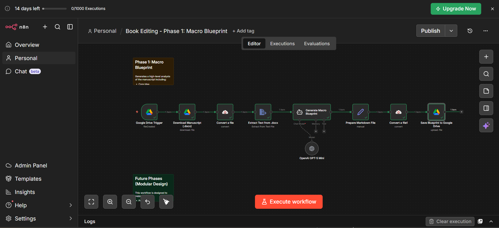
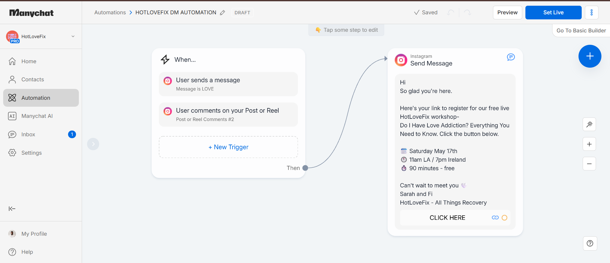

AI Influencer Content Pipeline
A fully autonomous influencer engine: an RSS trigger feeds a GPT viral filter that scripts content, generates images, renders a HeyGen avatar video, and auto-posts to Instagram, YouTube, and TikTok.

WhatsApp AI Assistant (RAG)
A multimodal WhatsApp assistant that answers from a private knowledge base — handling text, voice notes, images, and PDFs, with documents embedded into a MongoDB vector store for accurate retrieval.

Meta Ads AI Chatbot Assistant
A conversational AI assistant built in n8n that answers questions about Meta ad accounts and campaign insights on demand — pulling live data and replying in chat like an on-call media buyer.

AI Video Generation & Posting
An end-to-end short-video factory: an RSS trigger sparks an AI video idea, generates clips with Seedance, adds sound, stitches the final cut with Fal AI, and uploads straight to TikTok and YouTube.

AI Content Calendar Engine
A research-driven content engine that studies competitors and trends across YouTube, Reddit, TikTok, Instagram, and LinkedIn, then uses Claude to generate a full content plan, write it into a Google Doc, and email the calendar.

Facebook Messenger AI Bot
A Facebook Messenger assistant that reads and replies to DMs in real time with Gemini — complete with typing indicators, conversation memory, message chunking, and image & video responses.

Faceless AI Video Engine
A Telegram-triggered faceless video factory: it selects a winning theme, builds a structured video prompt, generates AI voiceover and visuals, assembles the clip, and tracks every job through to completion.

PrestaShop → Xero Order Sync
An order-to-accounting sync that pushes every PrestaShop website order into Xero as contacts and invoices automatically, every 15 minutes — wiping out manual bookkeeping and data entry.

Xero → PrestaShop Stock Sync
The inbound half of inventory automation: when a purchase order lands in Xero, it iterates the items and automatically increases the matching product stock on the PrestaShop store — every 15 minutes.

AI Book Editing Pipeline
A multi-phase manuscript editor: drop a .docx in Google Drive and it extracts the text, runs a macro-level structural analysis with GPT-5 Mini, and saves a polished editorial blueprint back to Drive.

Content Performance Learning Loop
A weekly loop that pulls post performance from Metricool, uses AI to learn what worked, and writes those insights back to Google Sheets so the content engine keeps getting smarter over time.

Automated Reporting Engine
A reporting engine that pulls daily and weekly data, calculates the key metrics in code, merges everything into one clean report, and sends it out automatically — no manual spreadsheets.

Instagram DM Lead Automation
A keyword-triggered ManyChat flow: when someone comments or DMs a keyword, it instantly replies with a registration link — capturing leads and driving signups to a live workshop on autopilot.

Fight Odds Scraper
An hourly pipeline that scrapes live fight odds, uses AI to parse the raw HTML into clean structured data, and upserts fighter records into a Supabase database for downstream use.
Want something like these for your business?
Tell me what is eating your team's time and I'll show you exactly how to automate it.